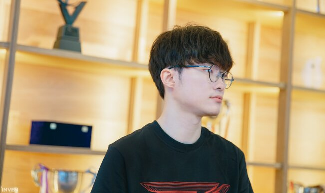

- 리그 오브 레전드
- 이상혁
- 페이커
리그 오브 레전드
1일 온라인으로 열린 2021 LCK 스프링 플레이오프 1R 두 번째 T1과 DRX의 4세트 경기는 T1이 승리했다. 팀이 경기를 쉽게 풀어갈 수 있도록 도와준 '페이커'와 계속 라인전 우위를 점해준 '테디-케리아'의 활약이 좋았다.초반 탑, 미드에서 격한 교전이 일어났다.

이 곳을 클릭하면 해당 자료화면으로 넘어갑니다.
T1 진영 골렘 쪽에서 탑, 정글 간의 2:2 교전이 벌어졌고 강타와 함께 6렙을 먼저 찍은 T1 탑, 정글이 볼리베어를 먼저 잡아냈다. 미드 라인에서도 정글러의 교전을 확인한 '페이커'와 '솔카'가 죽을 때까지 싸워 서로 전사했다.문제는 다음 상황이었다.
곧바로 전령 싸움이 일어났는데, 점멸이 없었던 오리아나가 먼저 전사하면서 손해를 크게 봤다. 봇 라인까지도 T1이 전투에 승리하면서 다시 한 번 DRX가 불리한 상황에 처했다. 계속 분전하고 있는 '킹겐'도 아칼리에게 솔로킬을 당하면서 DRX의 분위기는 더욱 암울해졌다.